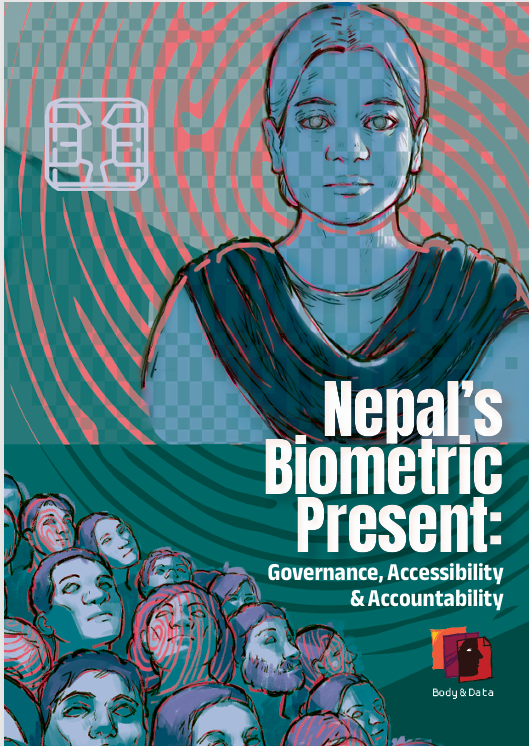

नोभेम्बर २०१८ मा नेपाल सरकारले राष्ट्रिय परिचयपत्र (NID) प्रणालीको सुरुवात गर्यो। यो महत्वाकांक्षी डिजिटल पहिचान संरचना सन् २०२३ सम्म नेपालका सबै बासिन्दाको सार्वभौमिक बायोमेट्रिक दर्ता हासिल गर्ने उद्देश्यले अघि बढाइएको थियो। यस प्रणालीअन्तर्गत प्रत्येक व्यक्तिलाई डिजिटल तस्बिर, दशवटा औंलाछाप र आँखाको आइरिस स्क्यानजस्ता बायोमेट्रिक सूचकहरू तथा आधारभूत जनसांख्यिकीय विवरणसँग आबद्ध गरिएको १० अंकको विशिष्ट परिचय नम्बर प्रदान गरिन्छ। मुख्यतः शासन प्रणाली र सेवा प्रवाहलाई सरल तथा प्रभावकारी बनाउन अनलाइन प्रमाणीकरण संयन्त्रका रूपमा डिजाइन गरिएको भए पनि, डिजिटल पारिस्थितिक प्रणालीभित्र NID को कार्यात्मक प्रयोग भने यसको सुरुवातदेखि नै अत्यन्त सीमित रहँदै आएको छ।
